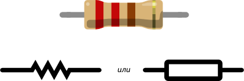

Подключаем резистор
Резистор — искусственное «препятствие» для тока. Сопротивление в чистом виде. Резистор ограничивает силу тока, переводя часть электроэнергии в тепло.

Цветовая кодировка резисторов

Последовательное и параллеьное соединение резисторов
1. Сопротивление двух последовательно соединенных резисторов равно R = R1 + R2.
При последовательном соединении резисторов получаем большее сопротивление чем сопротивление отдельного резистора.
2. Сопротивление двух параллельно соединенных резисторов равно R = R1R2(R1 + R2) или R = 1/(1/R1 + 1/R2).